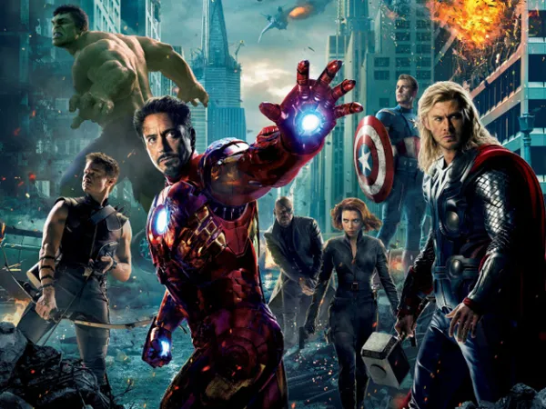
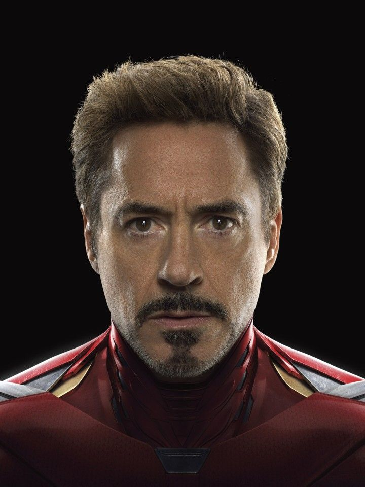
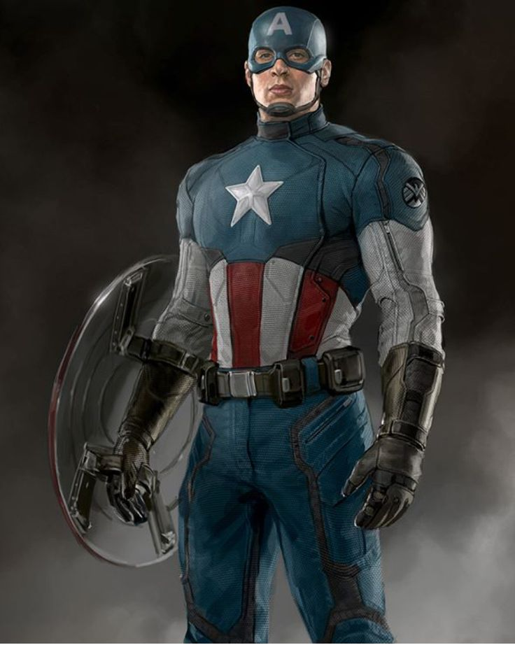

Introdução
Os Vingadores são um grupo de super-heróis da Marvel Comics, conhecido por unir alguns dos heróis mais poderosos para proteger a Terra de ameaças cósmicas.
A formação clássica inclui Homem de Ferro, Capitão América, Thor, Hulk, Viúva Negra e Gavião Arqueiro.
ARQUIVOS DA S.H.I.E.L.D

Homem de Ferro
- Nome verdadeiro: Tony Stark
- Poder: Armadura de alta tecnologia com voo, lasers, superforça e inteligência artificial
- Profissão: Bilionário, inventor, empresário
- Família: Howard Stark (pai), Maria Stark (mãe), Pepper Potts (companheira)
- Origem: Criou sua primeira armadura enquanto era prisioneiro em uma zona de guerra. Depois, passou a usá-la para combater ameaças globais.
- Afiliados: Vingadores, S.H.I.E.L.D.
- Fraqueza: Humano comum sem armadura; enfrenta dilemas morais e emocionais

Capitão América
Nome verdadeiro: Steve Rogers
- Poder: Força, agilidade e resistência sobre-humanas (graças ao soro do super soldado)
- Profissão: Soldado, líder tático
- Família: Nenhum parente próximo vivo; teve um romance com Peggy Carter
- Origem: Voluntário para um experimento militar na Segunda Guerra Mundial. Foi congelado e acordou décadas depois.
- Afiliados: Vingadores, Exército dos EUA
- Fraqueza: Homem fora do seu tempo, conflitos com a modernidade